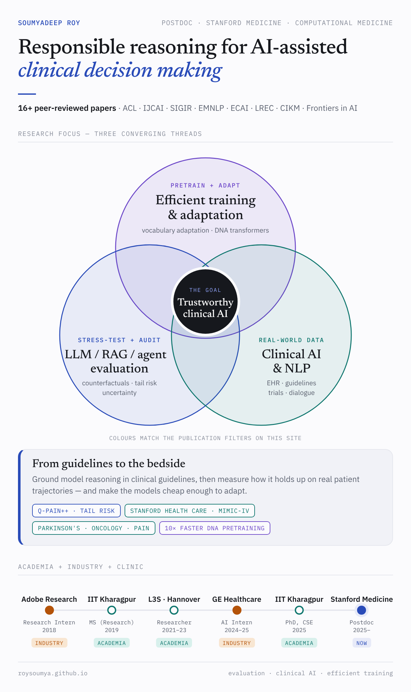
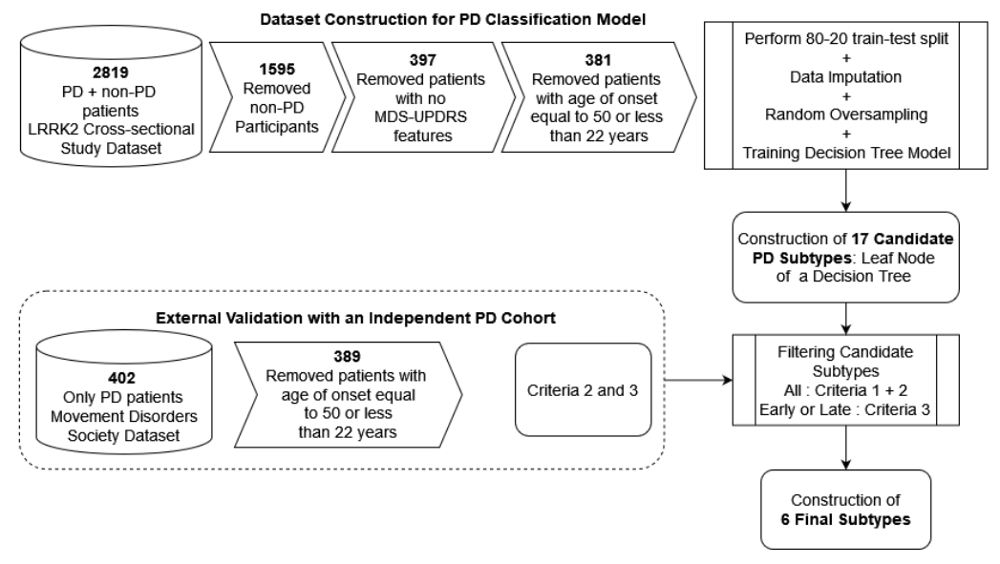
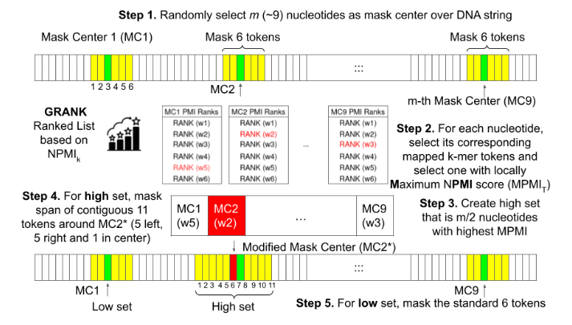
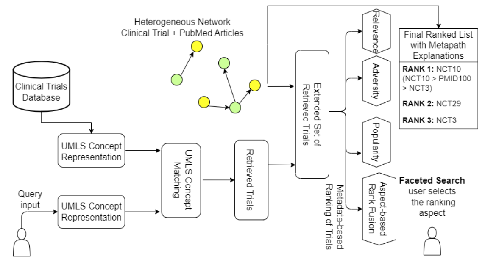
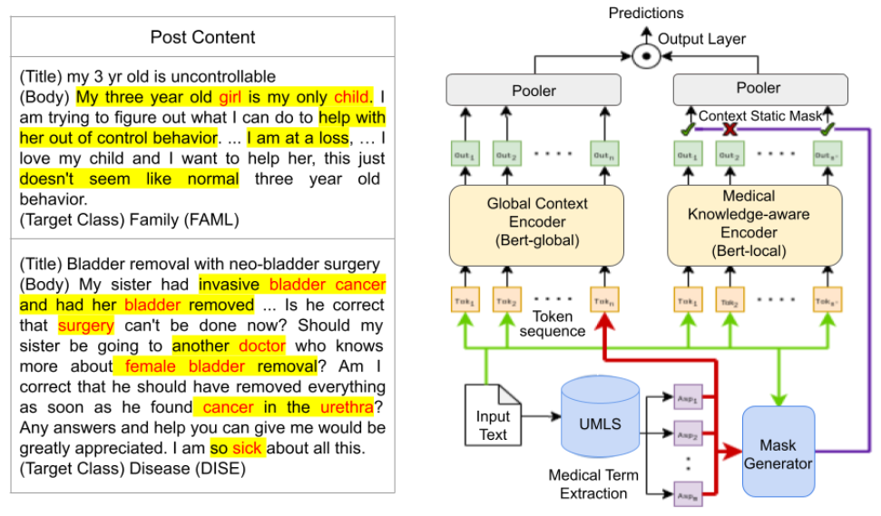
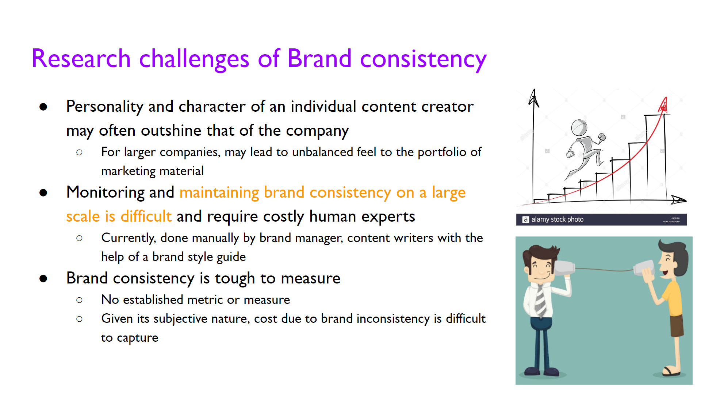
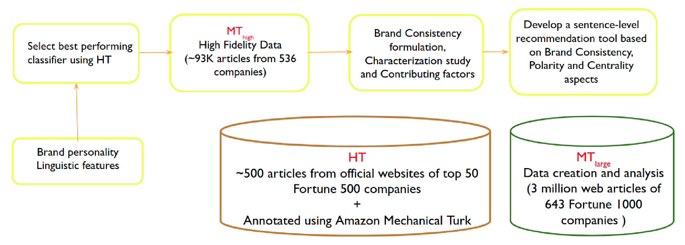

Fair AI
BMDS 223 — Deploying and Evaluating Fair AI in Healthcare
One lecture and one hands-on coding workshop on auditing language models and clinical data for bias.
I am a postdoctoral scholar working with Prof. Tina Hernandez-Boussard in the Division of Computational Medicine, Department of Medicine, Stanford University. My research is on responsible reasoning for AI-assisted clinical decision making, at the intersection of biomedical AI, machine learning and natural language processing.
I design and evaluate clinical AI systems on real-world patient data — structured EHR and clinical notes — across Parkinson’s disease (L3S Research Center & Hannover Medical School), oncology (Wipro GE Healthcare) and postoperative pain management (Stanford Medicine). My work spans reliability evaluation of medical LLMs, RAG systems and agents; guideline-grounded clinical decision support; efficient pretraining of biological foundation models; and domain adaptation for medical text.
I received my PhD in Computer Science and Engineering from IIT Kharagpur (thesis: Domain Adaptation for Medical Language Understanding). My work has appeared at venues including ACL, IJCAI, SIGIR, EMNLP, ECAI, LREC, CIKM and Frontiers in Artificial Intelligence.
PhD, Computer Science and Engineering
Indian Institute of Technology Kharagpur · Thesis: Domain Adaptation for Medical Language Understanding
MS (by Research), Computer Science and Engineering
Indian Institute of Technology Kharagpur · Thesis: Computational Approaches for Online Monitoring · GPA 9.21
B.Tech, Computer Science and Engineering
Kalyani Government Engineering College · Thesis: Understanding Email Interactivity and Predicting User Response to Email · GPA 8.61
My central question is how prescriptive knowledge sources — above all, clinical guidelines — can be used to build scalable, data-driven approaches that ensure the evidence quality and reliability of AI-assisted clinical decision making. I work on this in two connected directions.
Reliability measurement. I study how model reasoning varies under controlled, clinically grounded counterfactuals, and use that variation to estimate how a system will behave after deployment. This includes measuring invariance and sensitivity in synthetic patient trajectories for evaluating patient-to-trial matching (TrialEval), counterfactuals built on clinical risk factors (Q-Pain++), and trajectory-level metrics for rare, compounding failures in sequential clinical agents (cascading tail risk).
Reliability mitigation. Grounding model context in the relevant guideline details leads to more accurate dosage recommendations and better robustness to decision-space framing. In parallel, I build models that compute guideline deviations in real-world patient care trajectories from Stanford Health Care and MIMIC data, to ask whether a deviation leads to better outcomes or avoidable harm.

Factorial stress-testing and multi-modality evaluation of clinical LLMs. An audit of five models exposed a decision-space framing effect driving ~92% of treatment-decision changes; guideline grounding improves robustness.
Trajectory-level safety evaluation for sequential clinical LLM agents, with Tail Harm Escalation and Tail-Restricted Wasserstein Distance metrics, demonstrated on postoperative opioid prescribing.
NPMI-guided masking for masked language modelling of DNA sequences. 10× faster pretraining for few-shot gene sequence classification with DNABert and LOGO.
Adaptive curriculum masking for DNA transformers, improving genome-understanding benchmarks in both full-data and few-shot settings.
Vocabulary adaptation for medical summarization, with fragment-score-based hyperparameter search that cuts fine-tuning time from 450 days to about 45 hours.
Parameter-efficient vocabulary adaptation for LLMs: adds domain tokens while replacing under-trained ones. 35–55% less training time than continual pretraining, 37% fewer parameters.
Modifies BPE initialisation so domain-specific terminology is preserved during fine-tuning of pretrained language models.
Interpretable Parkinson’s disease subtyping on the MJFF LRRK2 cohort (1,500+ patients); six subtypes externally validated on the MDS dataset.
GPT-4 responses to USMLE questions with a medical-expert error taxonomy of 8 failure modes and span-level annotations by 44 medical experts.
A disambiguated long-tail QA benchmark addressing 8–30% entity ambiguity in existing datasets; query disambiguation gives RAG models up to 24.7% accuracy gains.
Annotated doctor–patient dialogues for physician intent modelling; intent filtering improves dialogue summarization.
~25 consumer queries with ~95 annotated clinical trials each, released with a metapath-based trial search model over a 750K-node PubMed–trial graph.
Cascading Tail Risk: Trajectory-Level Safety Evaluation for Sequential Clinical LLM Agents
Under review
Beyond Binary Audits: Does Guideline Grounding Mitigate Decision-Space Framing in LLM Opioid Prescribing?
Introduces Q-Pain++, a factorial stress-testing framework auditing five clinical LLMs.
Under review
A decision-aware evaluation suite for uncertainty quantification in clinical ML
Proposes the scale-independent Uncertainty Index; shows standard UQ methods fail to flag high-risk errors across three real-world datasets.
Under review

A Systematic Evaluation of Single-Cell Foundation Models on Cell-Type Classification Task
WSDM Day 2025
Beyond Accuracy: Investigating Error Types in GPT-4 Responses to USMLE Questions
SIGIR 2024 · Resource & Reproducibility track





Postdoctoral Scholar, Division of Computational Medicine
Stanford University · Stanford, CA · 09/2025–present
PhD AI Intern, HealthCare Technology and Innovation Center
Wipro GE Healthcare · Bangalore, India · 11/2024–05/2025
Research Associate
L3S Research Center, Leibniz University Hannover · Germany · 01/2021–06/2023
Research Intern, Big Data Experience Lab
Adobe Systems India · Bangalore, India · 05/2018–06/2018
MIT Hacking Medicine — Boston GrandHackCo-developed AuriCare, a holistic pain-management decision-support concept. DemoBlogEvent
Computable guideline pathways at StanfordComputing deviations in patient care trajectories with Stanford Health Care and MIMIC data.
Patent filing — Wipro GE HealthcareCo-inventor: deep-learning representation learning for medical-imaging-equipment sensor logs, enabling anomaly detection and predictive maintenance.
Funded translational project — AI4ICPS, IIT KharagpurMy PhD work on interpretable clinical trial search continues as a funded project led by a co-author. ProjectPoster
Lecture and workshop material is linked where available.
One lecture and one hands-on coding workshop on auditing language models and clinical data for bias.
Foundation Models for Medical TextAI Foundation Models in Biomedicine course, Leibniz University Hannover Slides
Building a Career in AI for Industry and AcademiaGoogle Developer Group on Campus, Kalyani Government Engineering College Slides
Vocabulary Adaptation Strategies for Finetuning Medical Language ModelsBreakfast Talk series, Microsoft Research India, Bangalore Slides
Improving Training Efficiency of DNA Foundation Models1st Symposium on Intersections: Statistical Genomics and Complex/Chronic Disease Biology, BRIC–NIBMG, Kalyani
Tutorial — Building Trustworthy AI Models for MedicineWSDM 2025 (3-hour tutorial) WebsiteSlides
Foundation Models for Medical TextAI Foundation Models in Biomedicine course, Leibniz University Hannover Slides
Mentoring
Reviewing & memberships